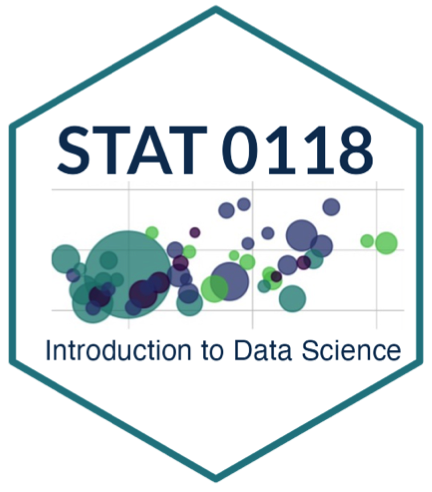

These are my notes from “Introduction to Data Science” at Middlebury College in Spring 2023.
This course utilizes R and RStudio for computation. Free download available here.
There is no official textbook for this course. Here are some resources that I utilize for inspiration/examples. They are great references.
“Data Science: A First Introduction by Tiffany Timbers, Trevor Campbell, and Melissa Lee” available for free online here: https://datasciencebook.ca/
“R for Data Science” by Hadley Wickham, Mine Çetinkaya-Rundel, and Garrett Grolemund available for free online here: https://r4ds.hadley.nz/
| Topic | Blank Notes (.Rmd) | Complete Notes (.pdf) | Homework (.Rmd) | Other Resources |
|---|---|---|---|---|
| Introduction to R, RStudio, and RMarkdown | ||||
wrangling with dplyr |
||||
aggregating data with summarize() and
group_by() |
||||
pretty tables with kableExtra
& intro to ggplot2 |
|
|||
creating plots with ggplot2 (Part
2) |
https://ggplot2-book.org/ | |||
creating plots with ggplot2 (Part
3) |
||||
working with categorical data using forcats |
||||
working with numeric data using scales |
||||
| joining | ||||
| reshaping | ||||
| maps (cloropleth) | ||||
| maps (points) | ||||
| Simple Linear Regression | ||||
| Multiple Regression | ||||
Web Scraping with rvest (tables) |
||||
Webscraping with rvest (text) |
||||
Working with text using stringr |
||||
Working with dates and times using lubridate |
||||
| Bonus Topic: Animation |
I will not post solution keys to the homework assignments above since I use similar assignments in my current courses.
I am human and sometimes make mistakes. Don’t hesitate to email me if you have any suggestions or corrections.
What’s Next?
This course is meant to be an Introduction to Data Science and is only the tip of the iceberg! If you you interested in further reading or next steps, I would recommend the following:
You may wish to improve your programming skills.
I’d recommend an introduction to programming course (like CSCI 0101 at Middlebury College).
For more information about programming in R, you can check out Advanced R by Hadley Wickham. This book is available for free online here: https://adv-r.hadley.nz/
You may wish to learn more about additional programming languages that are useful for data science: R, Python (popular libraries include NumPy, pandas), SQL, and Julia. Data Camp is a popular website for interactive courses and tutorials.
You may wish to improve your understanding of statistics. Understanding statistical concepts and probability theory is crucial for data science.
I’d recommend an introduction to statistics course (like MATH 0116 or MATH 0201 at Middlebury College).
If you’ve already taken an intro level class, you will want to look for additional classes in regression (like MATH 0211 at Middlebury), probability theory (like MATH 0310 at Middlebury), and inference (like MATH 0311 at Middlebury).
You may wish to learn more about GitHub which is useful for version control, collaborative development, and creating open-source materials. Here is a link to some resources that may be helpful: https://docs.github.com/en/get-started/quickstart/git-and-github-learning-resources
You may wish to read insightful articles, tutorials, and resources related to data science in R:
R-bloggers (https://www.r-bloggers.com/)
Towards Data Science (https://towardsdatascience.com/)
Simply Statistics (https://simplystatistics.org/)
Data Science Central (https://www.datasciencecentral.com/)